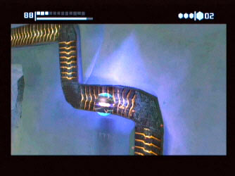

YOU ARE IN: METROID PRIME:
DETAIL
If you still find yourself
asking the question, "Yeh, I've read everything on the web site, but still
- what makes it so special?" then you've come to the right place. Please
feel free to browse this part of the web site to read about five reasons why this
game is pure magic.
1.
Visual Pleasantries
Some of
the best graphics ever released on the Game Cube come within the Metroid Prime
game. There are little things which make the game even more enjoyable
to play. These aspects actually make the player feel as though
they are Samus Aran in the suit. When you shoot a bright weapon,
say the Ice Beam at an enemy, that doesn't quite die and moves, or a flying
enemy, the eyes of Samus appear in the visor's reflection and follow the enemy
across the screen. The suit can experience extremes of temperatures, and
this affects the visor - step too quickly from a hot environment to a cold environment
and steam appears in the corners. Another little detail is that if you
shoot at enemies too close to you, like some bugs, then their guts get splattered
across the screen.
affects the visor - step too quickly from a hot environment to a cold environment
and steam appears in the corners. Another little detail is that if you
shoot at enemies too close to you, like some bugs, then their guts get splattered
across the screen.
2.
Game Boy Advance Link-Up
Along with
the release of the Game Cube version of Metroid (Prime) Nintendo have released
a Game Boy Advance version (called Metroid Fusion) in the style of the original
games. The great thing about this is that the two games can be linked
up using the GBA to GC cable! The extra features are:
- Once
Fusion is completed, it unlocks the entire Super Metroid game on the Game
Cube
- A Fusion
Suit can be transferred to Prime once Prime is completed
3.
Integrated Map
The integrated
map sits up in the top right of the visor screen and can be easily enlarged
at the click of a button. The map is fully 3-D and can be rotated and
zoomed so that Samus knows exactly where she is headed. Different areas
appear as different colours if they have been explored already. If the
player is lost, the map can also be configured to give little hints now and
again to show the user where to go.
4.
Back-tracking
I've heard
and read from some people that this feature is the only downfall of the whole
game. Personally I think it adds to the exploration feel to the game.
There is quite a lot of 
back-tracking involved, but it is not dull. Almost every time you re-visit
an area, you have a new ability to use, which means new areas to explore!
And because the enemies re-spawn every time you leave a room, as soon as you
go back in there are more enemies to kill. As you progress through the
game, the computers are updated with information which is also useful to scan,
as it fills up your log book.
5.
2D to 3D
The game
has come a long way from the 2D environments of the SNES of yesteryear.
But in actual fact, the weapons and game play have remained surprisingly similar.
The elements like the Grapple Beam and jumping from platform to platform still
exist, as do most of the other weapons. The morph-ball is also very good
at working in a 3D environment. The only aspect that wouldn't have worked
and have been scrapped is the screw attack.